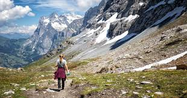
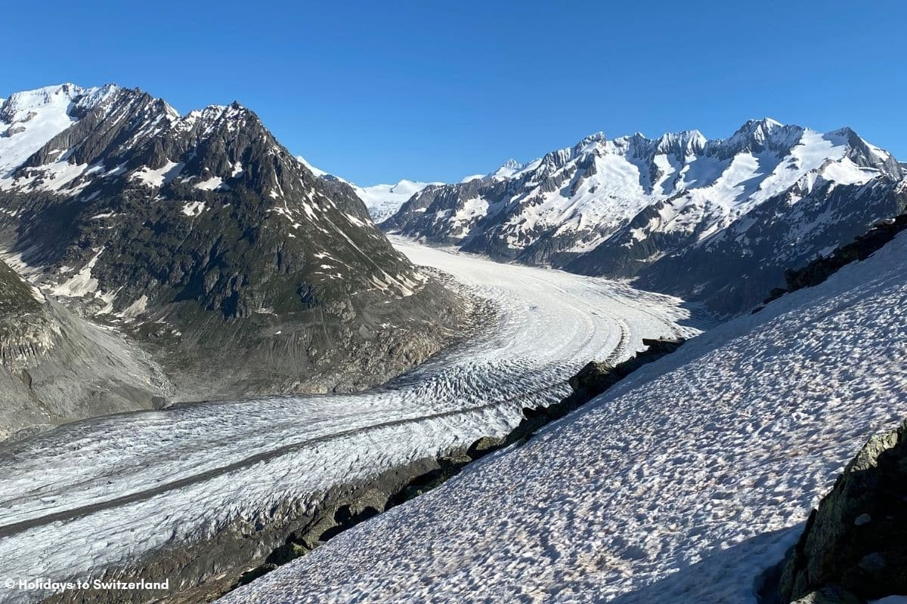
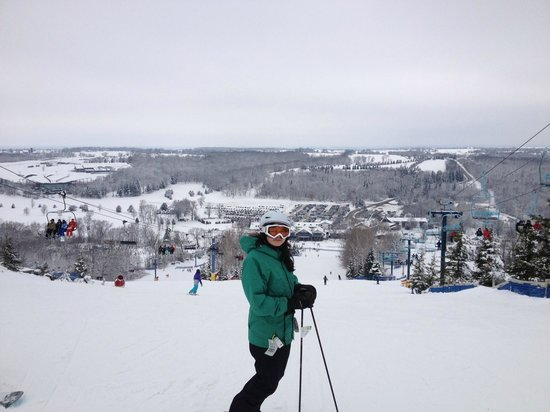
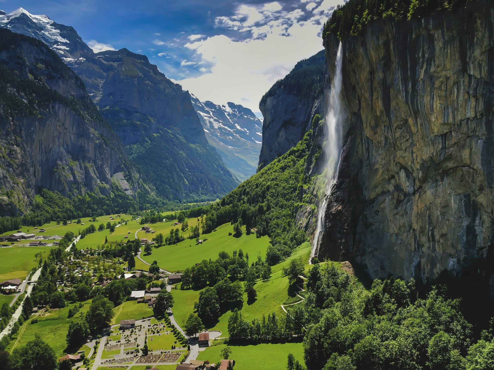
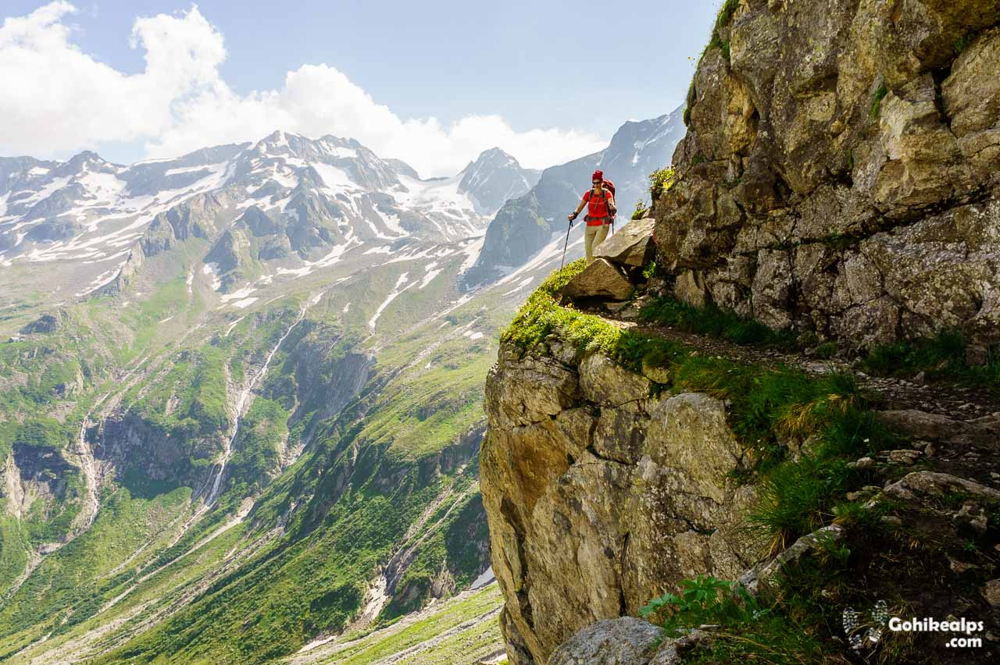

Hiking the Alps: Conquering Europe's Majestic Peaks

The Alps, Europe's crown jewel of mountains, have beckoned adventurers for centuries with their snow-capped peaks, emerald valleys, and tales of legendary climbers. My hiking journey through the Swiss Alps was a testament to nature's grandeur and the thrill of pushing personal limits. From the crisp alpine air to the echoing calls of marmots, every step was a reminder of why these mountains inspire wanderlust in millions.
Preparation and Arrival in Interlaken
The adventure began in Interlaken, Switzerland—a picturesque town nestled between two pristine lakes, Thun and Brienz. Arriving by train from Zurich, I was immediately struck by the dramatic scenery: towering peaks piercing the sky and crystal-clear waters reflecting the landscape. Interlaken served as my base camp, with its charming chalets, outdoor gear shops, and a vibrant hiking community.
Preparation was key. I packed lightweight hiking boots, layers for variable weather, a sturdy backpack, and essentials like a GPS device and first-aid kit. Joining a guided tour with experienced mountaineers ensured safety, especially given the Alps' unpredictable terrain. The anticipation built as I studied maps of trails like the Eiger Trail and Schilthorn ascent.
The Thrilling Eiger Trail

The Eiger Trail, winding through the Jungfrau region, was my first major hike. Starting from Grindelwald, the path offered panoramic views of the iconic trio: Jungfrau, Mönch, and Eiger. The Eiger's North Face, a sheer wall of rock and ice, loomed ominously—a reminder of the mountain's deadly history. Climbing steadily, I felt the adrenaline surge as the trail hugged cliffs with dizzying drops below.
The highlight was reaching a viewpoint where the entire Bernese Oberland unfolded: glaciers glistening in the sun, valleys dotted with wildflowers, and distant peaks shrouded in mist. The physical challenge was rewarding, with each switchback building endurance and a sense of accomplishment.



Crossing the Aletsch Glacier
One of the most surreal experiences was trekking across the Aletsch Glacier, Europe's longest glacier at 23 km. Crampons strapped to my boots, I navigated the ice-blue crevasses and seracs, feeling the raw power of nature beneath my feet. The glacier's slow movement was palpable, and the silence—broken only by the crunch of ice—was meditative.
Guides shared stories of climate change's impact, as the glacier recedes yearly. This added a layer of reflection to the hike, blending adventure with environmental awareness. Reaching the other side, I gazed back at the frozen expanse, humbled by its scale.
Summiting Schilthorn: A 360-Degree Triumph
The pinnacle of the trip was summiting Schilthorn at 2,970 meters. The cable car took us partway, but the final ascent was on foot, through rocky paths and alpine meadows. At the top, the world opened up: 360-degree views of endless peaks, emerald lakes like Oeschinen, and quaint villages below. The silence, punctuated by wind whispers, created a euphoric sense of freedom.
Watching the sunrise from the summit was magical—the sky igniting in hues of pink and gold over the mountains. It was a moment of pure victory, where fatigue gave way to exhilaration.
Pro Tip: Book the cable car in advance during peak season. Wear sunscreen—the high altitude amplifies UV rays. For the best views, arrive early to catch the sunrise.
Descending into Lauterbrunnen Valley
Descending into Lauterbrunnen Valley was a stark contrast to the heights. This UNESCO site boasts 72 waterfalls plunging into deep gorges, creating a symphony of rushing water. Hiking along the valley floor, I explored Staubbach Falls, where mist from the 300-meter drop cooled the air.
The valley's dramatic cliffs, lush greenery, and traditional farms offered a serene end to the hikes. I stayed in a cozy chalet, savoring Swiss fondue and reflecting on the journey.



Cultural and Culinary Delights
The Alps aren't just about peaks—they're about culture. In mountain villages, I encountered yodeling traditions and cheese-making demos. The food was hearty: raclette, rösti, and fresh alpine cheeses paired with local wines. Sharing meals with fellow hikers fostered camaraderie, turning strangers into friends.
Visiting Gruyères, home to the famous cheese, was a highlight. The medieval town, with its castle and chocolate factories, blended history with indulgence.
Challenges and Lessons Learned
Hiking the Alps tested me physically and mentally. Altitude sickness was a risk, mitigated by gradual ascents and hydration. Weather changes were swift—sunny mornings could turn stormy afternoons. Yet, these challenges taught resilience and respect for nature.
The solitude of high trails encouraged introspection, while group hikes built bonds. Overall, the Alps reminded me that true adventure lies in embracing the unknown.
Travel Tips for Your Alpine Adventure
- Best Time: June to September for milder weather and open trails.
- Fitness Prep: Train with cardio and hill walks—Alps hikes are demanding.
- Gear Essentials: Waterproof jacket, trekking poles, and GPS for safety.
- Sustainability: Stick to marked paths to protect fragile ecosystems.
- Budgeting: $100-200/day, including cable cars and accommodations.
The Alps are more than mountains—they're a playground for the soul. If you're drawn to their majesty, start small and build up. Each hike is a story waiting to be written.
Back to Blog